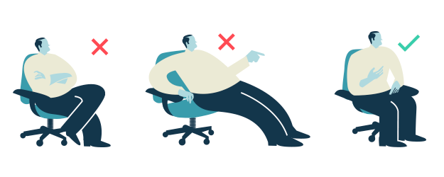

El lenguaje no verbal en la entrevista de trabajo
¿Sabías que en un proceso comunicativo, sólo un pequeño porcentaje de la información se transmite mediante lenguaje verbal?
La mayoría de la información se obtiene mediante la observación y percepción de elementos no verbales, entre ellos: el entorno, la imagen personal, los gestos, la mirada, las expresiones faciales, la utilización del espacio, la postura corporal, el tono de voz, el timbre, el volumen, el uso de silencios y la fluidez del habla.
Veamos algunos puntos
Prepara el escenario
En la mayoría de ocasiones, la entrevista tendrá lugar en la empresa, y seremos nosotros quienes podamos extraer información del entorno. Sin embargo, la entrevista por Skype, o herramienta análoga, es una práctica cada vez más habitual, especialmente cuando hay una distancia geográfica entre la persona candidata y quien realiza la entrevista.
En estos casos, hemos de escoger un espacio adecuado, limpio y ordenado, con elementos que contribuyan a mostrar una imagen madura, positiva y profesional de nosotros mismos.
Cuida tu imagen
Es importante que prestemos especial atención a nuestro aspecto y nos preocupemos de llevar una indumentaria adecuada para la ocasión. Una imagen agradable y acorde a la cultura empresarial, incrementará notablemente nuestras posibilidades de ser seleccionados o seleccionadas.
Para acertar en nuestra elección, es recomendable que nos acerquemos al lugar de trabajo, y observemos cómo suelen vestir los empleados. Al mismo tiempo, debemos preguntarnos qué imagen queremos proyectar, en función de nuestro perfil profesional.
Con carácter general, los expertos recomiendan colores claros para la camisa, neutros o fríos para el resto de la indumentaria, complementos discretos, maquillaje sencillo, peinado natural, zapatos cerrados. Sin embargo, para determinados puestos de trabajo, este estilo puede resultar demasiado sobrio o conservador.
También es importante que el modelo escogido nos resulte cómodo, y nos permita movernos con libertad, sin apretarnos o provocarnos molestias, que puedan distraernos o desconcentrarnos durante la entrevista.
Vigila tu postura y centra tu atención

Nuestra postura durante la interacción puede ayudarnos a transmitir seguridad y entusiasmo. Para conseguirlo, debemos mantener una postura erguida, con los hombros en línea recta con la espalda, no demasiado arqueados (reflejan tensión), pero tampoco excesivamente relajados (puede interpretarse como falta de interés por el puesto).
Al sentarnos, debemos procurar ocupar todo el asiento e inclinar ligeramente la espalda hacia delante, en posición de escucha activa, en lugar de colocarnos tímidamente en el borde de la silla, como si quisiéramos salir corriendo. Tampoco debemos recostarnos sobre el respaldo, puede transmitir prepotencia o escaso interés.
Si lo necesitamos, podemos apoyarnos en la mesa, utilizando el espacio más próximo a nuestro asiento, sin invadir el espacio de nuestro interlocutor. Es importante que respetemos la privacidad de quien nos entrevista, evitando dirigir la mirada hacia sus anotaciones.
Cuando hablemos con nuestro interlocutor o interlocutora, debemos mantener en él o ella la mirada, y siempre a la altura de los ojos, sin bajarla, o desviarla hacia otras partes de la habitación. Una mirada hacia la persona, por debajo de la línea de los ojos, es inapropiada en un entorno laboral, mirar hacia abajo y uno mismo, denota excesiva timidez o falta de confianza, y recorrer con la mirada la habitación mientras nos hablan, puede transmitir desinterés.
Apóyate en los gestos
Podemos realizar gestos con nuestras manos o cabeza para enfatizar, acompañar o complementar nuestro discurso, de esta manera, transmitiremos mayor entusiasmo, vitalidad y confianza, que si escondemos las manos mientras hablamos. También podemos utilizarlos para regular el proceso comunicativo, marcando el inicio o el fin de nuestra intervención; o servirnos de ellos para manifestar nuestro interés por lo que nos están diciendo.
Es fundamental que evitemos gestos que denoten emociones negativas, o pongan de manifiesto que tratamos de reprimirlas, como apretar los puños. Tampoco conviene que nos llevemos continuamente las manos a la boca, este gesto dificulta la comunicación, y puede interpretarse como falta de sinceridad o confianza.
Exprésate con sinceridad
Debemos tener en cuenta que si nuestro lenguaje verbal y no verbal transmiten mensajes contradictorios, quien nos entreviste dará más peso a este último, por ser más difícil de manipular. De modo, que no nos servirá de nada expresar nuestro entusiasmo por el puesto, si mientras nos explican las condiciones, se nos bajan las cejas mostrando decepción. Y restaremos confianza en nuestra aptitud, si conforme nos van explicando nuestras funciones, empezamos a poner cara de preocupación, y a realizar gestos de desbordamiento.
Un buen intercomunicador sabrá interpretar a través de nuestros gestos, expresiones o incluso la dirección de nuestra mirada, si nuestro discurso es sincero o estamos tratando de ocultar algo. Así que ¡mucho cuidado con la falta de honestidad!, es uno de los principios más valorados por todas las empresas.
Piensa en positivo
Una sonrisa puede abrirnos muchas puertas, siempre que sea sincera. La sonrisa forzada, puede resultar desagradable e incluso provocar rechazo. Cuando nuestra sonrisa es sincera, no sólo sonreímos con la boca, también lo hacemos con los ojos, formando ligeras patas de gallo. Para ser capaces de sonreír sinceramente, resultar agradables y transmitir confianza, es fundamental que nuestros pensamientos sean positivos.
Muévete con naturalidad y soltura
Desde nuestra entrada en el edificio, debemos sentirnos cómodos en las instalaciones, ¿quién sabe?, quizás sea nuestro próximo lugar de trabajo. Al desplazarnos, evitaremos arrastrar los pies (denota desidia), así como mantener constantemente las manos en los bolsillos. Si vamos cargados, debemos dejarnos libres el brazo y la mano derecha, para poder responder sin demora, cuando nos ofrezcan el saludo.
Respeta el espacio interpersonal
Si la interacción se produce de pie, o sin mesa que actúe como barrera física, debemos respetar el espacio vital de la persona con la que hablamos, para no resultar invasivos. Nos daremos cuenta de que estamos invadiendo su espacio, si la persona tiende a dar pequeños pasos hacia atrás, a medida que nosotros nos acercamos.
La distancia interpersonal idónea varía en función de factores personales y culturales. En caso que nos ocupa, se considera adecuada una distancia de 1 a 1,5 metros.
En cuanto al contacto físico, es desaconsejable que toquemos a nuestro interlocutor o interlocutora, de forma injustificada. Tan sólo estableceremos contacto físico en el saludo inicial y en la despedida. Para ello, optaremos por un estrechón de mano simple y firme, salvo que la otra persona inicie una modalidad de saludo diferente.
Escoge un tono y volumen adecuado
Es frecuente que los nervios nos jueguen malas pasadas en las entrevistas, y tendamos a emplear un volumen excesivamente bajo. Al hacerlo, estaremos transmitiendo escasa confianza y una excesiva timidez. Tampoco conviene que superemos el volumen de voz de la persona que nos entrevista, de esta manera, podemos resultar intimidatorios, prepotentes o excesivamente dominantes, y puede que esta imagen nos perjudique de cara al puesto.
En encuentros de este tipo debemos evitar el sarcasmo, la ironía o el cinismo, pueden dificultar la comunicación y proyectar una imagen negativa de nosotros.
Hemos de procurar expresarnos con fluidez, en la medida que lo consigamos, estaremos transmitiendo no sólo mayores habilidades comunicativas, sino también mayor conocimiento de nuestra profesión y seguridad en nosotros mismos. Para conseguirlo, es importante que nos familiaricemos y conozcamos en profundidad nuestro campo de trabajo.
Aprovecha los silencios
Durante el desarrollo de la entrevista, resulta fundamental que sepamos distinguir los tipos de silencios, e identificar los más adecuados para realizar nuestras intervenciones:
- Habrá pausas de tipo reflexivo, que sirvan a nuestro interlocutor o interlocutora, para asimilar a distintos niveles, la información que se está generando en el encuentro. Durante las mismas, no conviene atosigar a quien nos está entrevistando, con comentarios irrelevantes. Al hacerlo, no le estamos permitiendo reflexionar, y nuestra preocupación por llenar un silencio, transmite nerviosismo y ansiedad.
- Otras pausas, pueden producirse con la finalidad de acentuar lo dicho con anterioridad, o lo que se va a decir. Nosotros también podemos usarlas para centrar la atención sobre los aspectos más relevantes de nuestro discurso.
- Y por último, están los silencios que provoca el entrevistador o entrevistadora, como invitación a que desarrollemos más una idea, o demos una respuesta más completa. Éstos últimos, son los que debemos aprovechar para realizar una intervención plenamente satisfactoria. Los identificaremos por la expresión de inconformidad, o satisfacción a medias, que los acompaña.